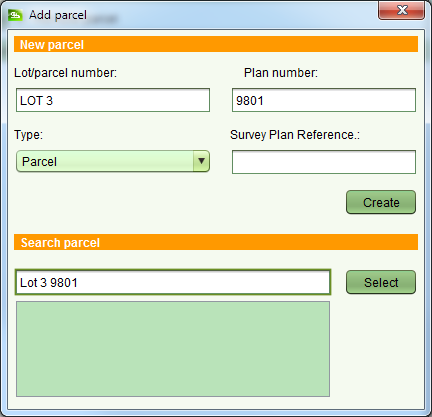

Convert a Paper Title
This service can be used to convert a paper title into its digital equivalent in SOLA. The
need to use this service may be triggered by the lodgment of an instrument over a property
that is not yet recorded in SOLA. This service has no fee associated with it.
Steps
-
-
Create a new application with the Convert to Title service.
-
Important: Note the folio reference (i.e. Lot/parcel number and Plan
number) for the title to be converted on the Property tab of Application Details and
click the Add property button. This will be used as the folio reference for the new
property record in SOLA. If you omit a folio reference here you will not be able
to
 Start the Convert to Title service.
Start the Convert to Title service.
-
Add an Office Note document to the application that describes why the title is being
converted into SOLA.
-
Scan the paper title and attach this to a Title Certificate document on the application
-
Lodge the new application. You do not need to print the lodgment notice.
-
Open the application and check the Fee paid flag on the Fees tab. If you do not have
permission to check this flag, arrange for your team leader to check it on your behalf.
-
Assign the application with the Convert to Title service to yourself.
-
Open the assigned application and start the Covert to Title service.
-
SOLA will open the Property Details screen with the folio reference for the new
property already set. Verify this matches the paper title. If the folio reference is
not correct, close the Property Details screen without saving and update the property
details on the Property tab of the Application Details screen and try to Start the service again.
-
On the General tab, click
 Link
paper title and link the Title Certificate document containing the scanned image of the
paper title to the property.
Link
paper title and link the Title Certificate document containing the scanned image of the
paper title to the property.
-
Set the Area as noted on the paper title. If no area is recorded, leave the Area field
blank.
-
On the Parcels tab, click
 Add parcel to
open the Add Parcel dialog
Add parcel to
open the Add Parcel dialog

Add Parcel dialog
-
-
Use the Search parcel text field to check if a parcel matching the folio reference
exists in SOLA. If it does, click the result in the results list then click the Select
button. If the parcel matching the folio reference does not exist in SOLA, complete the
New parcel details as appropriate and click the Create button. The Type should be set
to Parcel. The Survey Plan Reference can be left blank.
-
On the Rights / Restrictions tab you must add all of the current rights and
restrictions as noted on the paper title.
-
Start by creating the primary right for the property (must be one of Freehold,
Leasehold, Customary or Government). Select the appropriate primary right type from the
Right type drop down and click
 Create.
Create.
-
Enter the details for the primary right (e.g. owner details and share information).
Ensure the Is primary right checkbox is checked and enter an appropriate Registration
date and Memorial text. You will also need toAdd a document to the primary right. Use the Title
Certificate document.
-
Add any other current rights or restrictions (i.e. mortgages, caveats, etc) noted on
the paper title to the property by selecting the appropriate type of right/restriction
in the Right type drop down and clickingCreate.
-
Go to the Property history tab.
-
If the paper title indicates a Prior Title or Prior Folio then click theAdd tool in the Parent Properties section to launch the
Add Parent Property Wizard. Use the search to locate the appropriate prior title and
complete the wizard.
-
Make sure the Relationship Type on the Select Rights and Parcels screen is
set to Prior Title.
-
If you cannot locate the prior title using the search, then cancel the wizard as
SOLA does not have a record of the prior title.
-
Note that the prior title should have a status of Historic. If it is Current, then
that indicates the prior title is live. You should investigate further to determine
if the prior title should remain live or whether it must be cancelled as part of
converting the paper title (using the Cancel Title service).
-
You should also link the property to the appropriate village using the Add Parent
Property Wizard.
-
On the search, enter the village name as the Lot/parcel number and Village
as the Plan number. If you are unable to locate the village you require, contact IT
Support Team to get the village added into SOLA.
-
Make sure the Relationship Type on the Select Rights and Parcels screen is
set to Village.
-
 Save changes to Property Details and
Save changes to Property Details and Complete the Convert to Title service.
Complete the Convert to Title service.
-
Continue processing the application and any other services as required.